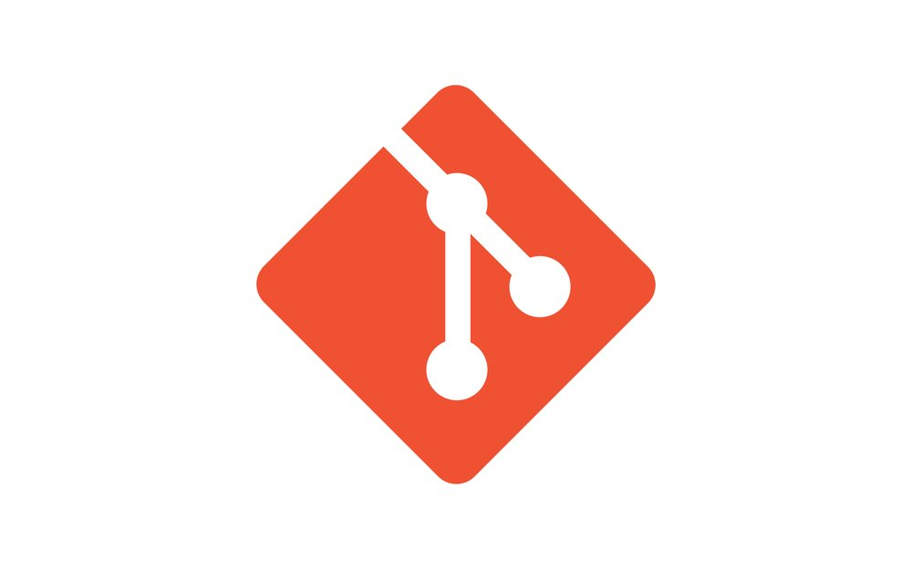
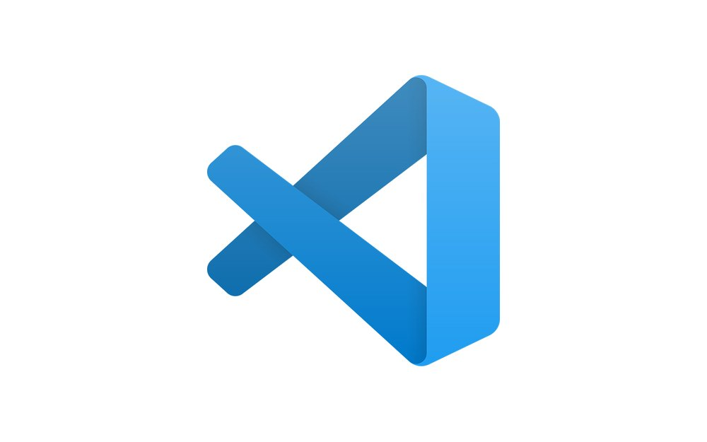
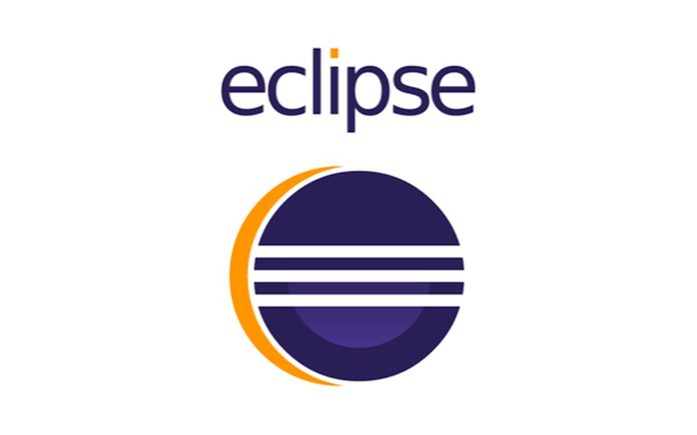
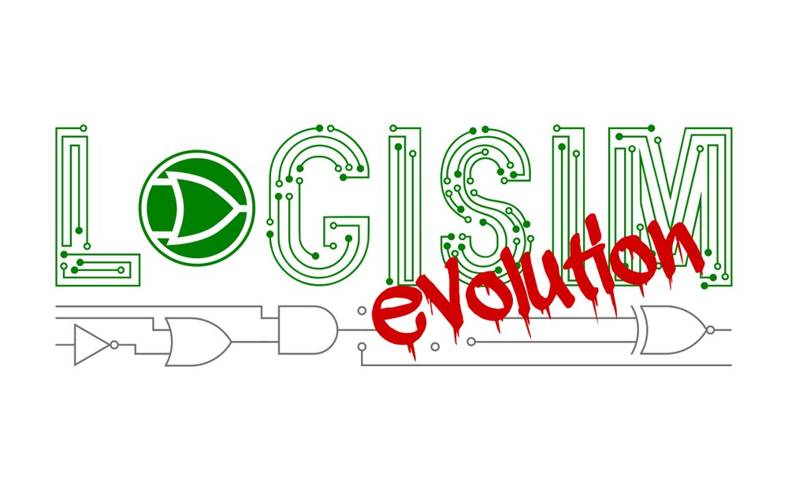
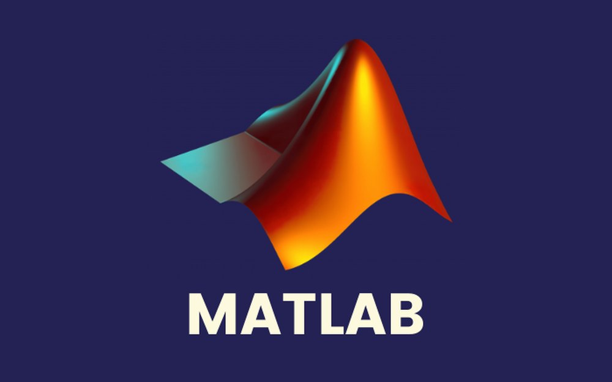
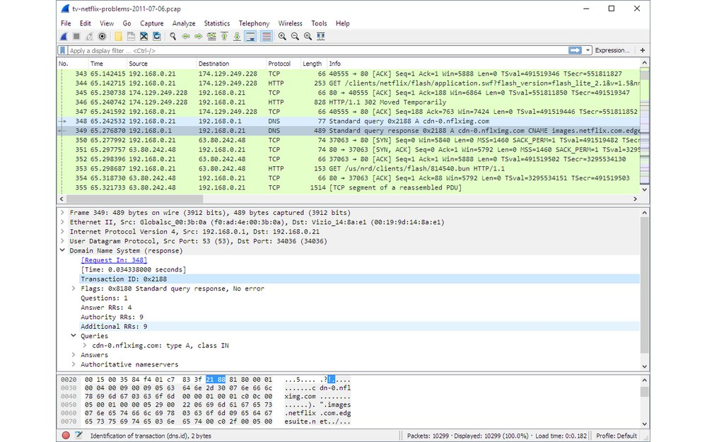
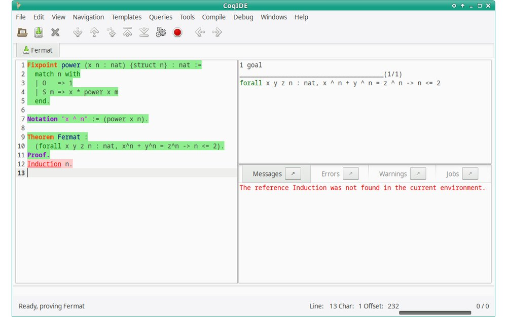

Tools & software I work with
The main software I use during my studies and projects: programming, version control, hardware design, numerical simulation, network analysis and formal proofs.

Version controlGit
A version control system that records the history of a project’s files. It lets you go back to an earlier version, work on separate branches and collaborate with other developers without overwriting each other’s work.

Code editorVisual Studio Code
A free, lightweight code editor from Microsoft. Through extensions it supports almost any programming language, and it offers syntax highlighting, debugging, an integrated terminal and Git integration.

Integrated development environmentEclipse IDE
An open-source integrated development environment (IDE), best known for Java. It brings an editor, a compiler, a debugger and project management tools together in one window.

Digital logic simulatorLogisim
An educational tool to design and simulate digital logic circuits. You build circuits from logic gates and sub-circuits and watch the signals change as you simulate them; it can even simulate whole CPUs. I used it to design my ARM processor.

Numerical computingMATLAB
A programming and numerical computing environment by MathWorks, widely used in engineering for matrix calculations, data analysis, plotting and simulation. Simulink, its graphical simulation extension, is used to model dynamic systems.

Network protocol analyserWireshark
A network protocol analyser that captures the packets travelling on a network and shows them in detail, layer by layer (Ethernet, IP, TCP/UDP, DNS, HTTP…). It is used to understand and troubleshoot network communications.

Proof assistantCoq
A proof assistant: you state a theorem in a formal language and build its proof step by step, and the tool checks that every step is logically correct. It is used to verify mathematics and critical software (the project is now being renamed Rocq). The screenshot shows its graphical interface, CoqIDE.
Images are used for illustration purposes only and belong to their respective owners.